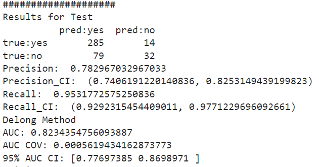
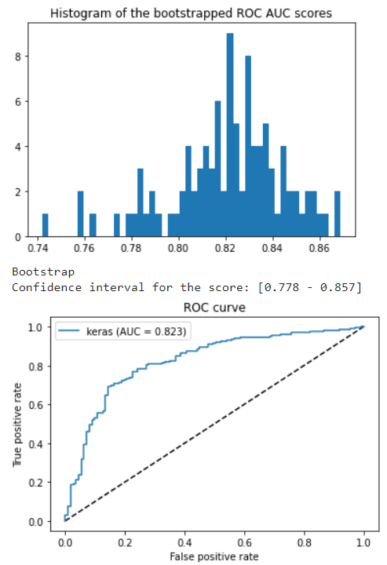

Data (Input/Output) Examples
Example of these files can be found in the /data/_ directory.
Here are the input and output examples for each module:
WSI Handler
Input: Whole Slide Image file (.SVS,DICOM,TIFF)
Link to the Data File Example: SVSFile
Link to the Jupyter Notebook Example Script: WSI_Handler
Output: Processed file such as sub image region
Annotation Extraction
Link to the Jupyter Notebook Example Script: AnnotationExtraction
Output: Extracted annotation file
Link to the Output Data File Example: Annotation
Patch Extraction
Input: Extracted annotation file generated from Annotation Extraction Step
Link to the Input Data File Example: Annotation
Link to the Jupyter Notebook Example Script: PatchExtraction
Output: Extracted Patches
Link to the Output Data File Example: Patches
Annotation File Generator
Input: Extracted Patches generated from Patch Extraction Step
Link to the Output Data File Example: Patches
Link to the Jupyter Notebook Example Script: AnnotationGenerator
Output: Generated Annotation File (.xml)
Link to the Output Data File Example: xml_file
Performance Assessment
Input: Continuous classification scores generated by ML model and the binary truth
Link to the Output Data File Example: MLResultExample
Link to the Jupyter Notebook Example Script: PerformanceAssessment
 Output: Performance Assessment Results
Example of the results output:
{kind=link}
{kind=link}